121
Somewhere on the internet there is still a paper from 2015, in a field that has nothing to do with cybersecurity, and buried in its author details is a phone number that nobody thought to remove. The way old wiring gets left behind a wall long after anyone stopped caring where it led. I found it because I was looking for exactly that kind of thing, and I remember sitting with that number open on my screen for a long minute before I actually dialed it. A Padma Shri awardee, the director of IIT Kanpur's C3I Hub, a man I had never spoken to. I called him without rehearsing a single word. Preparation would have meant delay, and delay was a luxury I could not afford. A shortlist of 120 names had just gone live, and mine was not among them.
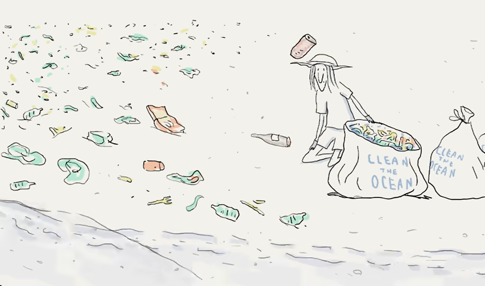
but I'm getting ahead of myself.
impatience has been the single most consistent thread of my life, the engine behind every good decision and every catastrophic one. Trace it back far enough and you'll arrive at a kid with an android phone and an app called lucky patcher, hacking his way through mini militia ranks because he didn't have the patience to actually clear them the way developers intended. before I ever touched a computer I was rooting phones, flashing custom ROMs, pressing buttons that could brick the device. The calculation was never about risk. It was about the unbearable tedium of doing things the way they were supposed to be done.
hacking saves, flexing ranks I never earned through gameplay, and underneath all of it a growing intuition that the interesting part of any system was never the surface you were given but the architecture you were not supposed to see. Then in seventh grade my dad bought me my first computer and that same curiosity simply migrated: from phones to PCs, from LP to linux distros, from hacking game levels to sending my own teacher a phishing email for their google classroom login, just to see if I could.
Somewhere around that age I read The Hacker Manifesto, Loyd Blankenship's angry little treatise from a federal prison cell, and it did what great writing does to a kid who already suspects he thinks differently than most people around him. It gave shape to a feeling that didn't yet have language. The line about the door being open to the world while other kids just play — that stayed.
I never thought I'd become one of those people. The tag of "hacker" felt too grand, too cinematic, and tags have never been what fascinated me. What kept me up was the work itself: memory management, the philosophical war between RISC and CISC architectures, why Linus Torvalds built what he built and the ecosystem that erupted around it. While people watched shows during meals I was watching history videos about the Unix wars. This wasn't discipline or ambition — it was appetite. The kind you can't manufacture and can't shut off, the kind that has a teenager prying open a computer case just to look inside.
Then JEE happened, the way JEE happens to most Indian kids; nobody really chooses it. It just pulls you in, like gravity does. I knew I wanted computers, and the only sanctioned route to a CS degree at any institution worth attending was through physics, chemistry, and mathematics on a single day. So I started preparing. In order to eventually study what I loved, I had to abandon it entirely. I gave up my computer, switched to an iPad because I couldn't trust myself not to disappear into code when I should have been solving integrals, and for a year and a half I lived in exile from the thing that made me feel most alive. There is a concept in ecology called a controlled burn, where you deliberately set fire to a forest to prevent a larger, uncontrollable wildfire later, and that's how I framed it to myself, a temporary destruction in service of something bigger. The problem with controlled burns, of course, is that they sometimes get away from you.
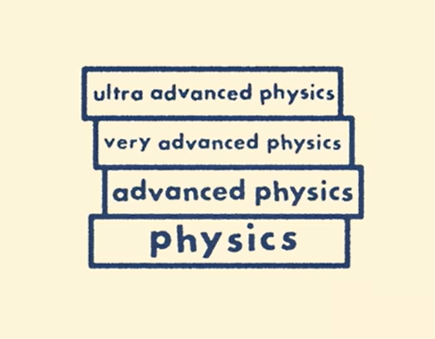
On the day of JEE Mains, I got stuck on a conic section problem that had no business costing me as much time as it did. I kept returning to it because I'd already sunk so much into it that walking away felt like a defeat. That single decision quietly rearranged the rest of my life.
I was scoring 176 marks after the final answer key dropped. enough, by every reasonable estimate, for the 99th percentile. To my surprise, the answer key was quietly deleted and replaced with a new one. I lost ten marks. The final percentile came out to 98.
98th percentile sounds impressive until you learn what it couldn't get me. It couldn't get me computer science at any college worth the name. I knew CS was the destination, it had always been the destination but during my JEE preparation I had also fallen for physics, the real kind, and I thought engineering physics could be where the two things I loved most converged. DTU engineering physics felt like the right door. That year, only that year, the cutoff jumped by almost 8,000 ranks and I missed it by 2,000. Meanwhile I had scored 256 in BITSAT and assumed M.Sc Economics at BITS Pilani Goa was out of reach, so I didn't apply for the counseling round. When the cutoffs were released, goa closed at 254.
two marks.
I sat in my room at NSUT, already enrolled in mechanical engineering — a branch I'd taken as a calculated gamble on internal upgradation and I cried. Not the performative kind. The quiet kind, where you're running the arithmetic over and over and the numbers keep saying the same thing: you were right there, and now you're here, and those are not the same place.
The plan, the only plan that made NSUT Mechanical bearable, was internal upgradation. Every year students move between branches in later counseling rounds, and I had the rank to clear the cutoff for something closer to CS once the reshuffling began. That year not a single student from GNGNO got upgraded from mechanical. Zero. I wrote a mail to the professor handling the process, calling out the anomaly. The reply was kind in the way institutional replies are kind: he told me I should try to excel in mechanical and be the best in the field I was given. my contingency evaporated.
I was stuck. In a department where nobody was there because they wanted to be, where professors taught like the subject owed them something and students attended like the seats owed them nothing. What began as a logistical problem, wrong branch, easy fix, quietly became something closer to a permanent condition.
Everyone around me knew I was the guy who was good with computers. I became my hostel's unofficial laptop repair guy, explaining concepts from courses I wasn't even enrolled in. People knew. But knowing it and taking it seriously turned out to be two very different things.
I kept doing CS on my own anyway. The job market narrative was already grim enough that even CS graduates were sweating, so a mechanical student chasing tech was widely considered delusional.
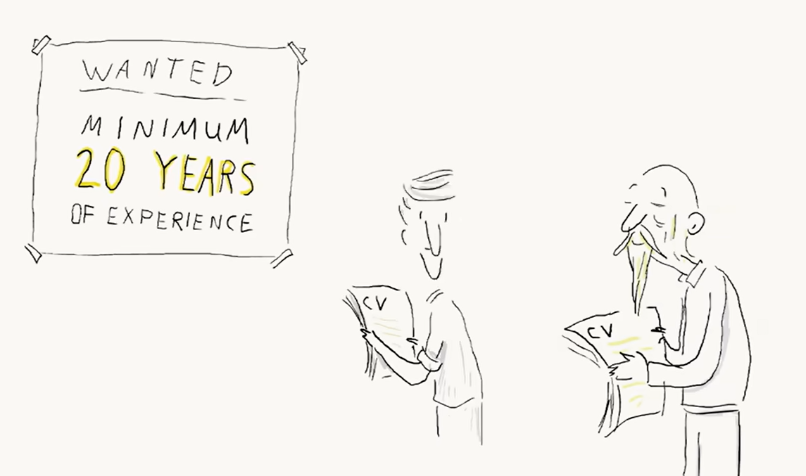
I studied operating systems, computer networking, algorithms by myself. I participated in competitive programming contests and won second prize at an inter-college one, which was met with the particular kind of dismissal NSUT reserves for anyone operating outside their assigned lane. The TNP coordinator told me point-blank that mechanical students aren't allowed to sit for tech placements. And even if a company was open to it, he said, "we filter them out to minimize the chaos — I personally do it."
There is a term in psychology for what happens when you're repeatedly told your passion doesn't count because your paperwork says otherwise: identity foreclosure. i felt it every day. in class, on reddit threads where strangers confirmed that nsut mechanical is not worth it, in the quiet branchism that nobody acknowledged but everyone practiced.
I never doubted that computers were where I belonged. I only doubted, some days, whether anyone with the power to open a door would ever bother looking at the person standing in front of it.
Through all of it, my father believed in me. I shared every small win with him and hid every missed opportunity, every night of self-doubt. He knew I was passionate. He didn't always know how close the walls were.
All the while, that old instinct to take things apart kept pulling me back in.
When NEET 2024 results dropped and there was scrutiny about irregularities, I built a system out of pure curiosity that brute-forced birth dates and login IDs and suddenly had access to student data at a scale that made me uncomfortable.
When NSUT's campus WiFi blocked everything through deep packet inspection including Valorant, which I have three thousand hours on, and chess, which is arguably educational; I spent weeks studying DPI bypass methods, proxy protocols, the hysteria2 protocol. There was a night where I was implementing a solution while I had my electronics exam the next morning, one of the toughest subjects in my curriculum. A senior from another college who'd done similar work asked me why I wasn't studying. I didn't have a good answer. I just knew the wifi problem was more interesting. When I finally cracked it!! my own VPN, akamai peering, 30 ms ping on a campus network distributed among hundreds of peers.
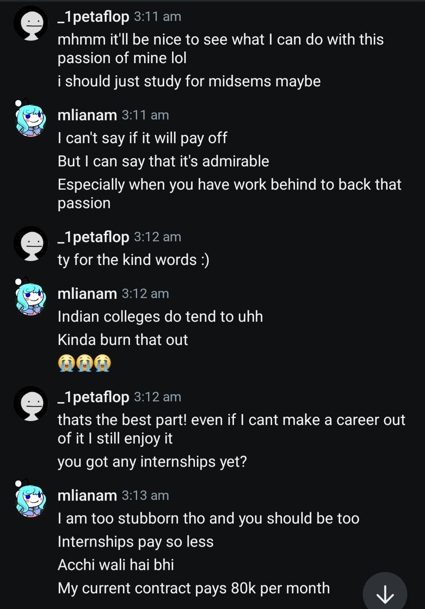
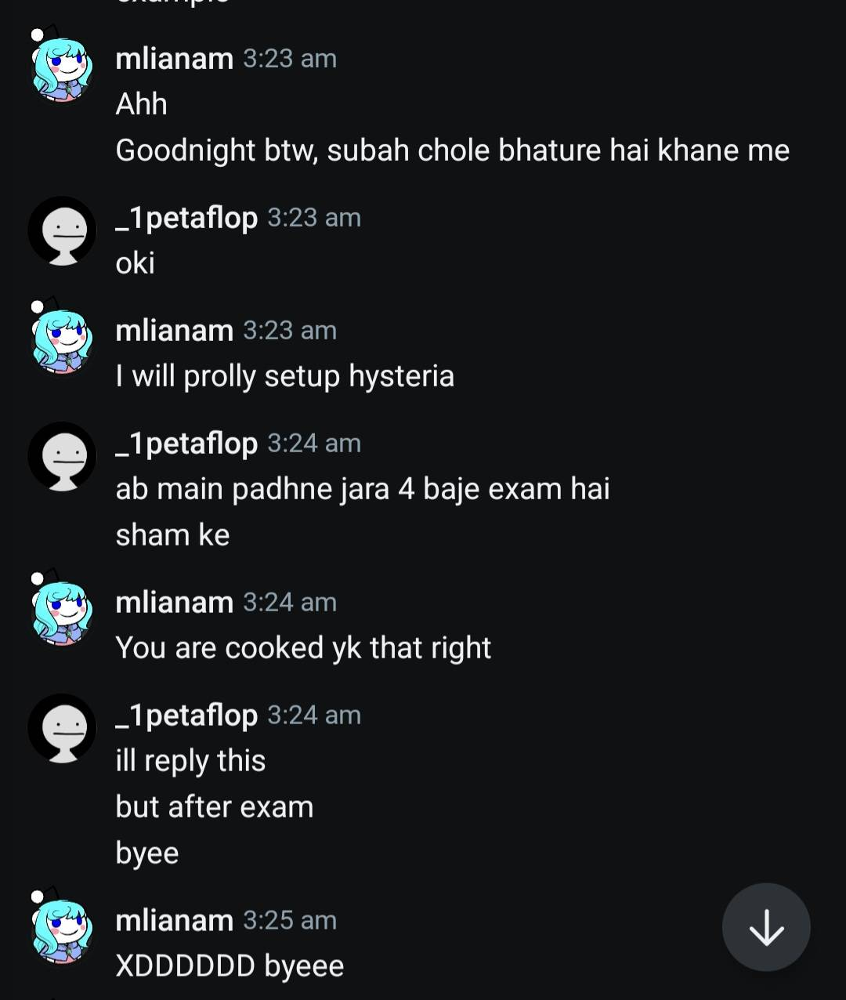
When a friend mentioned wanting a Newslaundry subscription but found it expensive, I thought about it as a problem with a surface I could look underneath. found a redux-based vulnerability in their front end where subscription verification happened client-side and the article payload was hidden behind the state management layer. paywall bypass! BOOM! I built a browser extension that made every article free. But this friend had a conscience sharper than mine, they refused to use it, said they valued the journalism and asked me to do a responsible disclosure if I thought the bug was real. That was the first time ethics stopped being a lecture and became a real choice, one that someone I respected asked me to make. I made my first responsible disclosure that week.
Then came Almashines, a company that institutions outsource their alumni services to, where I found an OAuth vulnerability in the redirect flow that let me grab fresh tokens by editing the referrer link. i recorded the poc, reported it, they fixed it within a day and acknowledged my work. These were not career moves. These were tuesday afternoons.
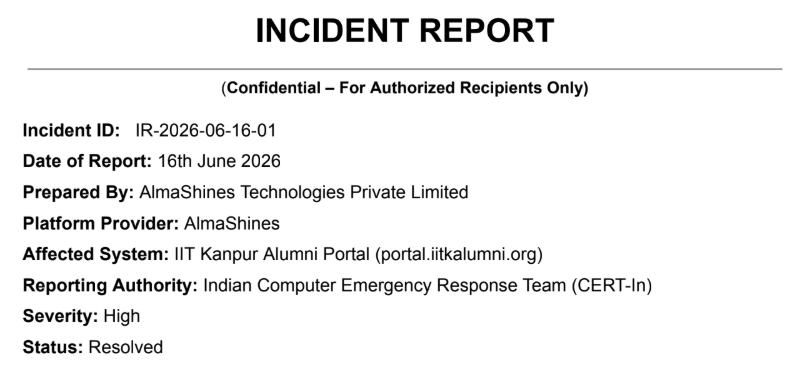
And then things shifted, quickly, and in directions I never expected.
A story broke that someone had breached CBSE, a major data breach making national headlines, and the name belonged to someone from our old Discord server, one of the communities where we used to mod subreddits together. Then Sarthak Sidhant surfaced, another friend from those same channels, who had found issues in CBSE tenders and was suddenly all over the media. I was watching people who were just handles and avatars not long ago reshape the national conversation around cybersecurity. The feeling was less inspiration than recognition: this is where the door leads when you walk through it.
The friend who reported the account takeover vulnerability on CBSE's OSM portal got hired by IIT Kanpur. And almost simultaneously, IIT Kanpur announced something that made the future feel negotiable again. a new, fully on-campus cybersecurity programme designed for students with deep, demonstrable interest in cybersecurity who hadn't been able to pursue it formally because the traditional entrance exam machinery had sorted them into other boxes.
Someone asked the programme director, Professor Manindra Agrawal, on social media how to prepare for the entrance exam. he replied with the kind of brevity that only tenured brilliance can afford, if you need to prepare for this then this is likely not for you.
reading that, I felt identified. this was the thing I'd been accidentally preparing for since I was thirteen. I submitted my application within two days, one of the first candidates to apply. i linked my blog, my github, my codeforces profile, my responsible disclosures, every project that could speak for a life lived inside computers.
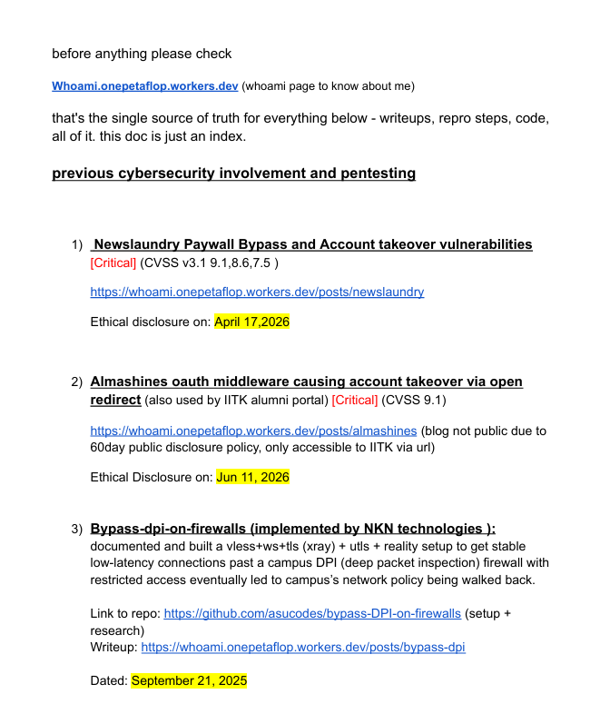
Then came CTF prep. web exploitation I'd already done out of pure curiosity, and linux had been default for years, but reverse engineering and cryptography needed real, focused work. Twenty days of twelve hour study sessions, and for once in my life the hours didn't feel like hours because I was studying the thing itself, not a proxy for it.
Three thousand people applied. They shortlisted 120.
I wasn't one of them.
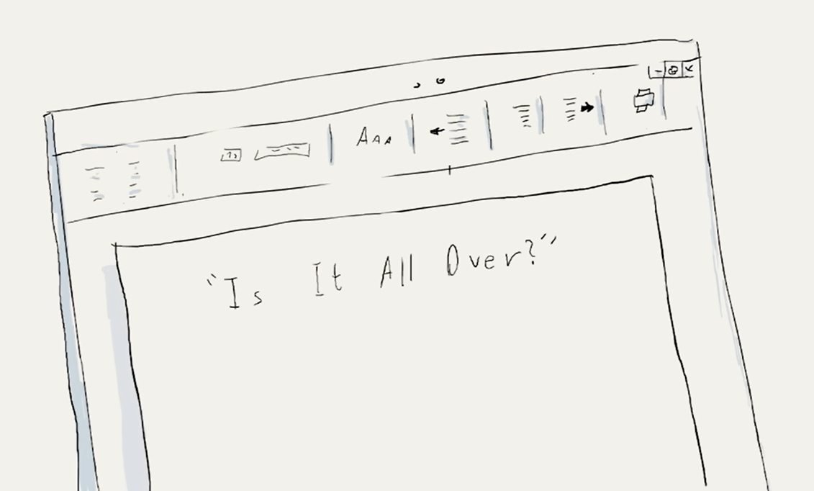
What I felt wasn't disappointment but a disbelief that how am I not on the shortlist with all the evidence? my github analytics showed that my repos had zero views in the past two weeks. The rejection wasn't a judgment; IT WAS AN OVERSIGHT.
calling the director at IIT-K on a personal mobile number I'd dug up from a decade-old research paper sounds insane. but I simply didn't have another option. I had to dial in.
The call was a mess, in the best possible way. His voice was calm; mine was rushed.
"You must have submitted the application incorrectly," he said.
"I checked my consolidated view. everything is in order. github shows my repos weren't reviewed unlike others"
I wasn't asking for a favour. I was asking for a process correction, and I had the receipts to prove it.
"Send me your portfolio on WhatsApp," he said.
He read through my blog, went through my work, and after a pause, said he'd try to help.
But I wasn't betting on a single thread. I found the C3I Hub CTO on LinkedIn and wrote to him directly.
Two hours later, a new list went up. It had exactly 121 names.
The 121st was mine.
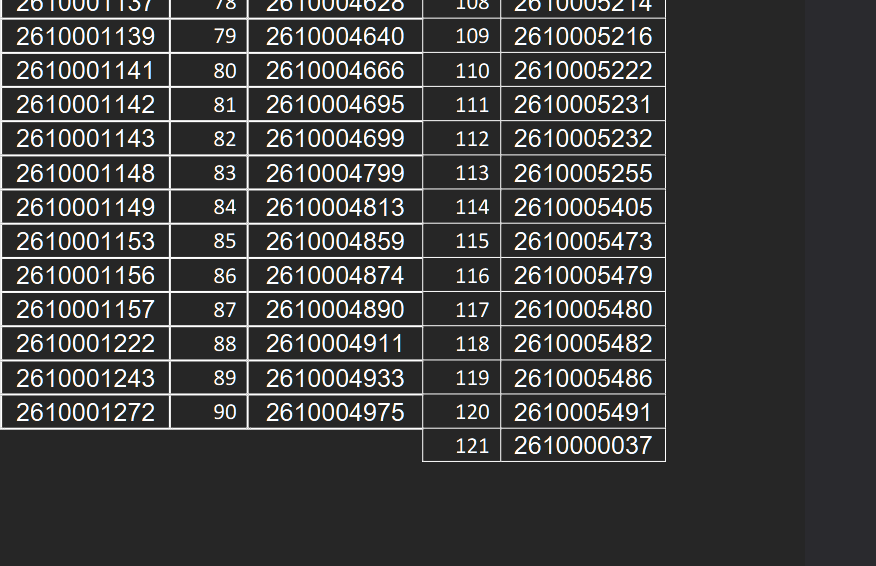
This is not the first time a list involving my future was revised two hours after publication. The last time was when JEE mains answer key was silently replaced and I had lost 10 marks with it. this time, it gave something back. I don't believe the universe practices literary symmetry, but if you're going to connect dots backward, the pattern is, at minimum, interesting.
There was noise. people assumed I'd pulled strings, gamed my way in. Professor Agrawal addressed it publicly, tweeting that the list was extended because a manual review of my profile showed prior cybersecurity experience well above the proposed cutoff, and that the process had subsequently rechecked other applications and added another candidate too. 122, final count.
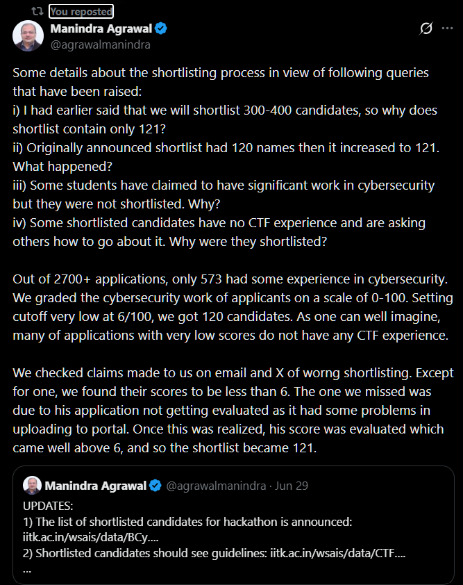
I could have spent energy defending myself. Instead, I decided the only response worth giving was the one I'd give inside a six-hour CTF exam at IIT Kanpur, on their terms, in their sanitized kali linux lab with screen recording, keystroke logging, and c3i hub invigilators watching every move.
The exam had nine challenges.
I solved the caesar cipher first — straightforward, a warmup. Then I hit a wall: an agent manipulation web challenge that resisted twenty minutes of probing, an SSRF vulnerability I couldn't crack on first pass. ninety minutes in, I had one solve and a growing awareness that this paper was harder than what I'd practiced on PicoCTF or CryptoHack.
I circled back to an OSINT puzzle: a location to spot from google maps, a base45 string that decoded into coordinates pointing at ranchi, jharkhand. chased it for thirty minutes before moving on. came back to the SSRF and solved it. reverse engineered a binary basically on muscle memory. then a network forensics challenge: followed an HTTP stream through a packet capture, found a steganographic image hiding a base64 flag inside it.
by the three hour mark I had five solves for 50 points. I spent the remaining three hours pushing at what I couldn't crack: a cache poisoning challenge, an MCP server prompt injection I came painfully close to, trying xor loops on a wasm binary before time expired.
when the six hours ended, the system auto-submitted. I talked to other students who came for the exam. my friend was scoring 40. some had scored zero. a lot of 15s and 20s. I knew I had done well.
The results came on the 8th of July.
The paper had been hard enough that the general category cutoff was 15 points. Out of 52 students IIT Kanpur selected that year, 22 from open. The final merit list was ordered by roll number.
Mine was first. My score was 50.
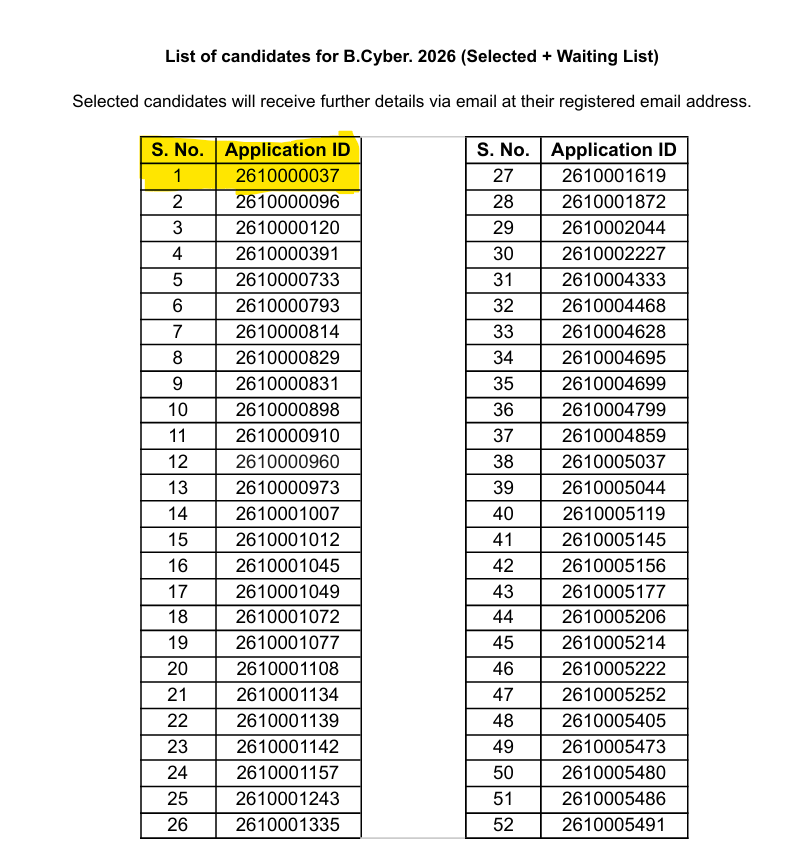
I'll find out on campus whether that was the highest or if someone edged me out with 55, but the trajectory is what I keep returning to: the kid who was 121st on the shortlist, the last name added, the one people assumed had gamed his way in, submitted the same CTF as everyone else on the same machines, scored more than three times the cutoff, and came out at the top of the list. Not because he got lucky, though luck is part of any story worth telling but because he'd been doing this his whole life, in bedrooms and hostels and campus networks, without credentials or permission or any institutional framework that said yes, you belong here.
There is a version of this story where none of it lines up. Where my friends never make national news and I never hear about the programme. Where the application glitch goes unnoticed and I spend another year studying OS and compilers in my NSUT room, alone with my passion and a mechanical degree that doesn't describe me. Where I don't find that phone number, or I find it but I hesitate, and hesitation becomes acceptance, and acceptance becomes a different life. Had I never made that call, had I never had the particular brand of confidence that comes not from arrogance but from years of living proof that you are what you say you are, had I listened to the people who told me it gets really tough from mechanical and I should focus on what I have, had I not made peace with the possibility of unemployment in exchange for doing what I love; none of this happens.
But it did happen. And I'm pretty sure that had it not, had I still been at NSUT next semester with no programme and no vindication, I would still be the kid tinkering with networks, reading about operating system internals, and pushing buttons I'm not supposed to push. Because that was never about the outcome. The outcome just finally caught up.
I met nisarga on campus after the exam — the friend who'd been hired by c3i hub, and we spent hours talking about projects and servers and the days when we were just handles on a discord channel. It felt like the most natural thing in the world. Two people who'd walked through the same door, from opposite sides of a timeline, arriving at the same room.
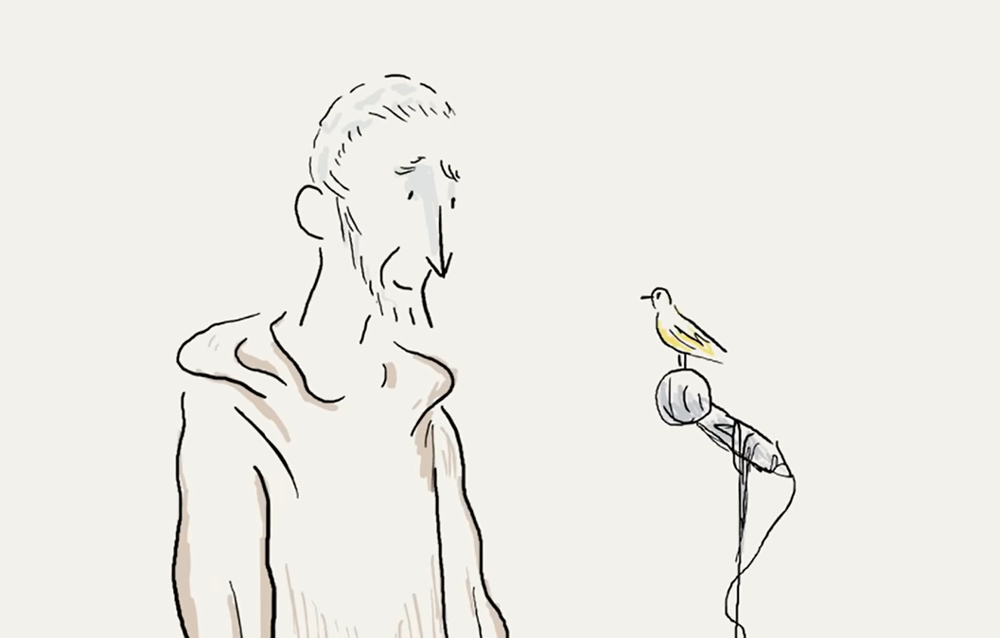
If you've read this far, you probably already know me, or you're someone preparing for next year's cycle and wondering if it's worth the bet. It is. Not because the odds are good. 52 from 3000 isn't a ratio that inspires casual optimism but because the thing you're betting on isn't the admission. It's yourself. And if you're the kind of person who reads this and recognizes the feeling, the door is already open.
I'll do what I love to do, and I'll find people who will love me for what I do. That was the line I kept coming back to in every dark hour at NSUT, and it turns out it wasn't a coping mechanism. It was a plan.